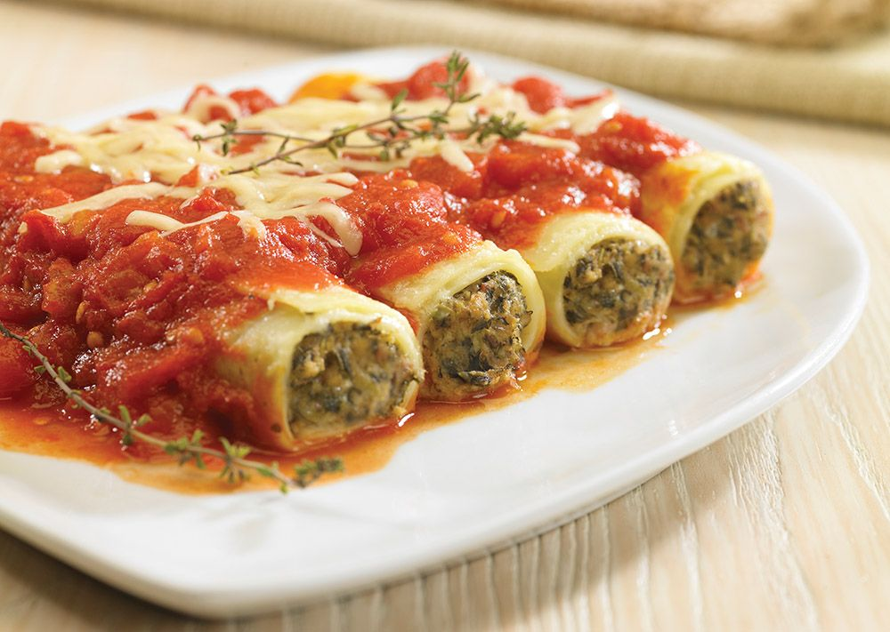

Back to Home
Canelones al Estilo Uruguayo

Description
Los canelones son un plato tradicional uruguayo de origen italiano, muy popular en las mesas familiares.
Se preparan con pasta rellena de carne, cubiertos con salsa blanca y gratinados al horno.
Ingredients
- 12 láminas de pasta para canelones
- 500g de carne molida
- 1 cebolla picada
- 2 dientes de ajo
- 1 taza de salsa de tomate
- 2 tazas de salsa blanca (bechamel)
- 1 taza de queso rallado
- Sal, pimienta y nuez moscada al gusto
Steps
- Cocina las láminas de pasta y reserva.
- Sofríe la cebolla y el ajo hasta dorar.
- Agrega la carne molida y cocina bien.
- Añade la salsa de tomate y sazona con sal y pimienta.
- Rellena cada lámina de pasta con la mezcla de carne y enrolla.
- Coloca los canelones en una fuente para horno.
- Cubre con salsa blanca y queso rallado.
- Hornea a 180°C por 25 minutos hasta gratinar.